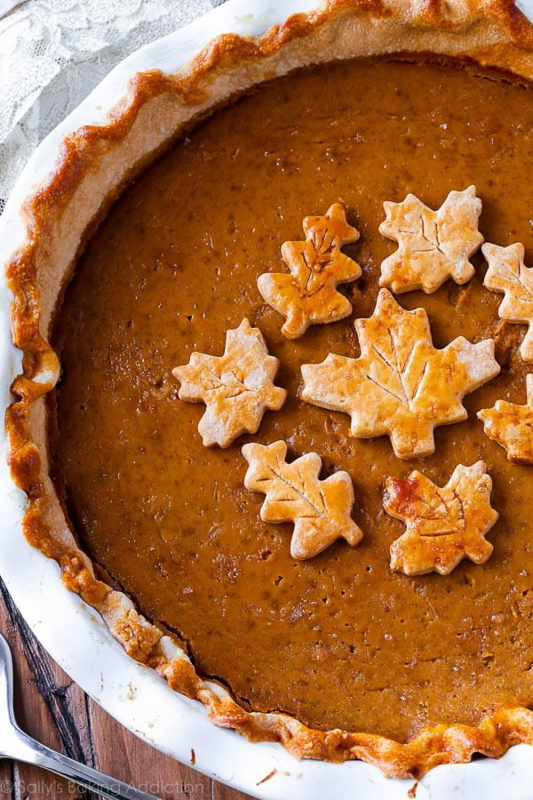

Pumpkin Pie

Description
As of writing this, November has long passed but deliciousness is not bound to any season! Why not have pancakes for every meal? Why not have pumpkin pie outside of thanksgiving week? We have free will and grubby hands to make pies at anytime we please! I havent made this pie yet either so lets follow along and bake it together!
Ingredients
- One pie crust
- Egg wash: 1 beaten egg with 1 Tablespoon milk
- One 15-ounce can pumpkin puree
- 3 large eggs
- 1 and 1/4 cups packed light or dark brown sugar
- 1 Tablespoon cornstarch
- 1/2 teaspoon salt
- 1 and 1/2 teaspoons ground cinnamon
- 1/2 teaspoon ground ginger
- 1/4 teaspoon ground nutmeg
- 1/8 teaspoon ground cloves
- 1/8 teaspoon fresh ground black pepper
- 1 cup heavy cream
- 1/4 cup milk
Steps
- Preheat oven to 375F
- Prepare bottom crust onto pie dish
- Crimp edges and brush edges with egg wash
- Parbake the crust for 10 minutes
- Prick crust with a fork to create steam vents and bake for 7 more minutes
- Remove crust and let cool
- Whisk pumpkin, eggs, and brown sugar until combined. Add the cornstarch, salt, cinnamon, ginger, cloves, pepper, nutmeg, heavy cream, and milk. Vigorously whisk until combined.
- Pour filling into crust, only filling 3/4 the way up
- Bake at 375F for 25 minutes
- Add pie crust shield
- Bake for 35 more minutes
- Cool for 3 hours and then serve!
Back to recipes